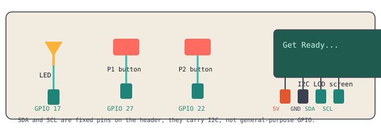

An LED flashes on after a random delay. Two players each have a button. Whoever presses first wins, and the LCD screen displays who won and exactly how fast. This uses everything from earlier in the week, GPIO, while loops, and an I2C screen.

LED to GPIO 17 with a resistor, same as always.
Player 1's button to GPIO 27 and GND.
Player 2's button to GPIO 22 and GND.
LCD: 5V, GND, SDA, SCL, using the header's fixed I2C pins. Run sudo i2cdetect -y 1 to find your screen's address if you don't already know it.
import random
from time import sleep, time
from gpiozero import LED, Button
from RPLCD.i2c import CharLCD
led = LED(17)
button1 = Button(27)
button2 = Button(22)
lcd = CharLCD('PCF8574', 0x27) # use YOUR address
lcd.clear()
lcd.write_string('Get Ready...')
sleep(random.uniform(2, 5))
led.on()
lcd.clear()
lcd.write_string('GO!')
start_time = time()
winner = None
while winner is None:
if button1.is_pressed:
winner = "Player 1"
elif button2.is_pressed:
winner = "Player 2"
elapsed = time() - start_time
led.off()
lcd.clear()
lcd.write_string(winner + " wins!")
lcd.cursor_pos = (1, 0)
lcd.write_string(f"Time: {elapsed:.2f}s")
again = input("Play again? (y/n): ")
while again == "y":
lcd.clear()
lcd.write_string('Get Ready...')
sleep(random.uniform(2, 5))
led.on()
lcd.clear()
lcd.write_string('GO!')
start_time = time()
winner = None
while winner is None:
if button1.is_pressed:
winner = "Player 1"
elif button2.is_pressed:
winner = "Player 2"
elapsed = time() - start_time
led.off()
lcd.clear()
lcd.write_string(winner + " wins!")
lcd.cursor_pos = (1, 0)
lcd.write_string(f"Time: {elapsed:.2f}s")
again = input("Play again? (y/n): ")
Two extensions are ready for you if you want to keep pushing this project further.
Catch a False Start, penalize pressing before the LED turns on
Track a Running Score, first to 3 wins the match